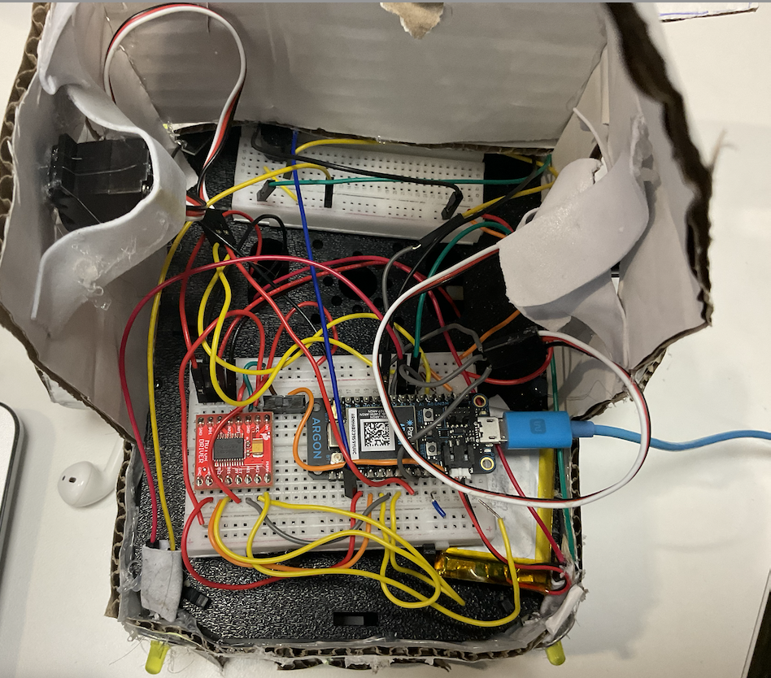

Bluetooth Car Showcase
Under the Hood!
This Bluetooth-controlled car is powered by Particle Argon and the Adafruit Bluefruit App, allowing seamless wireless control. The project leverages real-time Bluetooth communication, enabling smooth and responsive navigation.